In tutorial 2 we looked at how the Master Programmer could be used for creating fixed loops,
loops where the number of iterations is known at design time. The drawback to using the Master
Programmer for controlling loops is that it can only control loops where the number of iterations
is known ahead of time. If you need to deal with loops where the iteration count is variable or
unknown at design time then the Master Programmer cannot be used and a different method is needed.
This tutorial will show you a way to create loops where the iteration count is unknown until
runtime. This technique uses an Accumulator to control the loop. Be sure to start from a blank
setup.
|
First be sure you have the Init tab selected on the simulator |
|
Connect the Init Pulse to P1-A:1 |
We will use the Constant Transmitter to provide our iteration count, so lets set it up.
| 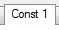 | Switch to the Constant Transmitter panel 1 |
 |
Be sure that the power to the panel is On |
| 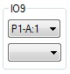 | Set the input for program 9 to P1-A:1 |
| 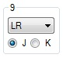 | Set program 9 to send all of register J |
| 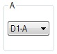 | Set the Constant Transmitter to send on D1-A |
| 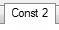 | We are done with this panel for the moment, so switch to panel 2 |
Set register J to -10 (10s compliment is needed here):
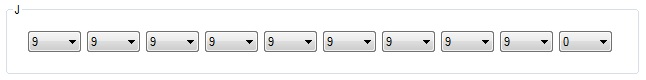
| The sign of the J register needs to be set to Minus |
There is a good reason why we want our loop count to be negative. ENIAC provides an easy way
to auto-increment an accumulator without any need for additional constants, but there is no
way to decrement an accumulator without having a -1 stored somewhere else. By using a negative
loop count we can use the auto-increment capability to change our loop counter.
Now that the Constant Transmitter is sending the loop count, we need to configure an accumulator
to receive the count.
 |
Select the Acc tab |
| 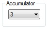 | We will use accumulator 3 for our loop control, so select it |
|
Be sure that the power to the accumulator is On |
| 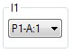 | Set the input for program 1 to P1-A:1 |
| 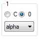 | Configure program 1 to receive on alpha and its Clear/Correct switch to 0 |
| 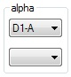 | Connect the alpha digit input to D1-A |
Now that our loop counter (accumulator 3) is setup to control the loop, it is time to setup what
happens in the loop itself.
| We need to trigger the beginning of the loop after the constant was loaded, so switch back to panel 1 of the Constant Transmitter |
|
| 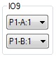 | Connect the output of program 9 to P1-B:1 |
We need to increment the loop counter during each iteration of the loop.
|
Back to the Acc tab |
| Be sure that accumulator 3 is selected | |
| 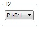 | Connect the input of program 2 to P1-B:1 |
| 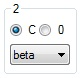 | Configure program 2 to mode beta and set the Clear/Correct switch to C |
We used mode beta here for a reason, mainly because it is not connected to anything, thus
guaranteeing that we receive a zero during this step. The Clear/Correct switch will increment
the accumulator by 1, which is all we need to happen here.
Now to add the counting and punching to our loop.
 |
Select accumator 1 |
|
Turn the power On to this accumulator |
| 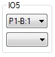 | Connect the input of program 5 to P1-B:1 |
 |
Configure program 5 to mode alpha and the Clear/Correct switch to C |
Now accumulator 1 will be increased by 1 at the same time that accumulator 3 is being incremented.
Next is to punch the current count.
| 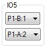 | Connect the output of program 5 to P1-A:2 |
|
Switch to the Init tab, where the punch program ports are |
| 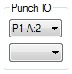 | Set the punch input to P1-A:2 |
 |
Switch to the Punch tab |
|
Turn the power On to the panel |
Now we need to configure the punch so that it will only punch the counter numbers
 |
Change to the Print tab |
 |
Be sure that you are on Panel 1 |
 |
Set the connection swith for groups 1-2 to C All other groups should be set to 0 |
 |
Switch to Panel 2 |
Only print groups 1 and 2 should be set to print, set all the others to Off

Now that all the work in the loop is done, we need to trigger the loop controller (accumulator 3)
to close the loop and determine if another iteration is needed.
|
Switch back to the Init tab |
| 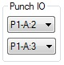 | Set the punch output to P1-A:3 |
|
Switch to the Acc tab |
| Select accumulator 3 | |
| 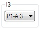 | Set the input for program 3 to P1-A:3 |
| 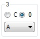 | Configure program 3 to mode A and the Clear/Correct switch set to 0 |
| 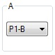 | Connect digit output port A to P1-B |
That last step probably needs a little explanation since we are connecting a digit output
tray to a program tray. The program trays also have connectors that allow a digit value
to be sent on the program trays, this mechanism allows you to make decisions. P1-B:1 is connected
to the beginning of our loop, when we connected the A output of accumulator 3 to program tray B
we in essence are using the sign of the accumulator to trigger the next action, this is another
reason why we used a negative number. When you send a negative number out the A port, wire 1
(P1-B:1 in our case) will recieve pulses that can trigger the next program step. Once the number
is positive, no more pulses will appear on the P1-B:1 and our setup ends.
If you needed to perform additional work after this loop, you could connect the S output port to
another program tray (for example P1-C) and then use position 1 to trigger the next step. To do
this you would also have to change the program mode of the output from A to AS.
Go ahead and run your setup, if all is connected properly you should see
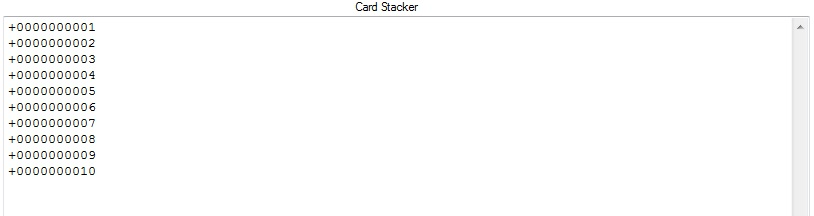
on the punch output.